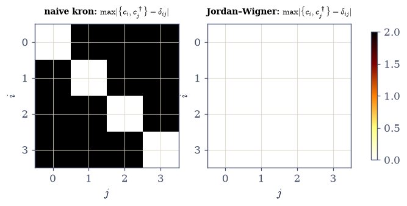
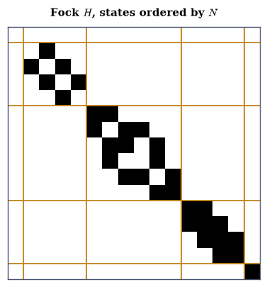
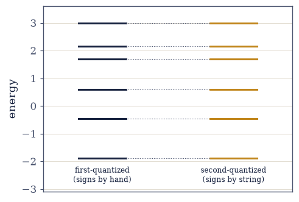
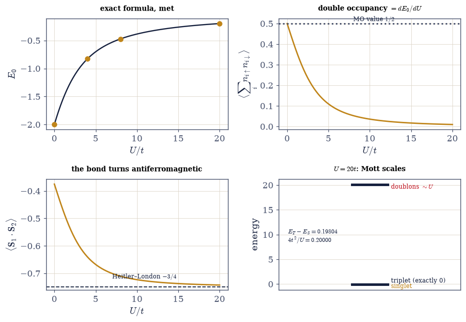
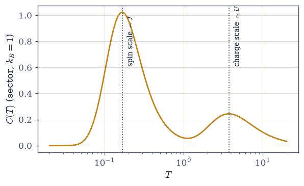
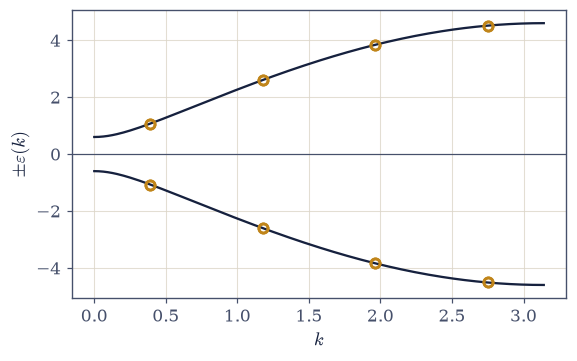

7.23 Second Quantization: The Occupation Number Becomes the State#
Notebook overview#
The Coda opens here: three optional notebooks — “The Many-Body Gateway” — that sit after the volume’s arc (which §7.22 closed) and outside it, for readers who want the formalism the volume kept gesturing toward. Nothing downstream depends on them; everything in them depends on what the volume already built.
This first notebook gives the volume’s deepest bookkeeping habit its own operators. From §7.7 onward, a quantum gas was never “particle 1 here, particle 2 there”: it was a list of occupations, one integer per mode, and every free partition function factorized because the list did. What the volume never had was a way to change the list — operators that add and remove quanta, so that tunneling, interaction, and pairing can be written without ever naming a particle. First quantization names the particles and then labors to erase the names: the \(N!\) of §7.8, the sign gymnastics of every Slater determinant, labels introduced only to be crossed out. Second quantization never introduces them, and indistinguishability stops being a constraint to enforce and becomes a fact of the notation.
The construction is deliberately computational. Bosons come first because Volume VI already built their machinery (the harmonic-oscillator ladder matrices, reused verbatim), and they arrive with the artifact every truncation carries: on a truncated ladder the canonical commutator is exact everywhere except the top state, and the corner is demonstrated before anything is trusted. Fermions expose the real subtlety: the naive multi-mode construction fails, demonstrably — operators on different sites commute, and commuting creators build symmetric states, bosons wearing fermion costumes. The repair is the Jordan–Wigner string, presented not as the solving trick of §7.19 but as the definition of lattice fermions, with the full anticommutator table verified at machine precision as the unit test no sign bug survives. The epistemic center is a rendezvous: the same two-fermion problem built twice, first-quantized (antisymmetrized pair basis, Slater–Condon signs by hand) and second-quantized (a number block of Fock space), spectra agreeing to sixteen digits — a theorem checked to the bit, and a sign audit in which the by-hand signs are exactly the labor the strings automate. The volume’s cornerstone is then re-derived in one line (the factorization of §7.7 as a Fock-space grand trace), and the notation proves its worth on the Hubbard dimer — the smallest interesting interacting problem and the hydrogen molecule in disguise: exact ground-state formula matched to all digits, Hellmann–Feynman confirmed as a numerical theorem, superexchange measured against \(4t^2/U\), quantum chemistry’s founding debate resolved by a \(6\times6\) matrix, and a two-peak specific heat showing one interaction manufacturing two thermodynamic scales. A Bogoliubov–de Gennes gesture closes the loop of §7.19: the crown of Movement V re-read as a change of basis on quadratic fermions.
Conventions (this notebook). Modes are ordered left to right in every Kronecker chain: mode 0 is the leftmost (most significant) factor, and the single-mode fermion matrices act on the per-mode basis \((|0\rangle, |1\rangle)\) with \(c = \begin{psmallmatrix}0&1\\0&0\end{psmallmatrix}\) (so \(c|1\rangle = |0\rangle\)). The Jordan–Wigner string puts \(Z\) factors on all modes left of the target: \(c_i = Z^{\otimes i} \otimes c \otimes I^{\otimes(M-i-1)}\) — stated once here, and audited by the anticommutator gate after every construction. Truncated boson ladders are
numpy.diag(numpy.sqrt(numpy.arange(1, nmax+1)), 1)with the top-state corner checked, always. Number sectors are extracted withnumpy.ix_on the diagonal of \(\hat N\) (project the Hamiltonian, never diagonalize the full Fock matrix for one sector). The Hubbard dimer’s mode order is \([1\!\uparrow, 1\!\downarrow, 2\!\uparrow, 2\!\downarrow]\). Every spectrum is computed once and reused (the cache discipline of §7.22). Hellmann–Feynman derivatives use a central difference with step \(10^{-4}\), both evaluations in the same number sector. The BdG block matrix isnumpy.block([[A, B], [-B, -A]])with the antiperiodic wrap-link sign.How to read the checks. Each exercise closes with a
validatecall against an independent fact: the commutator table against \(\delta_{ij}\) (and the corner against \(-n_{\max}\)); the anticommutator table against the fermion algebra; sector dimensions against binomial coefficients; two constructions of one problem against each other; the Fock grand trace against the product of §7.7; the dimer against its exact formula, its derivative theorem, and its two scales; the BdG spectrum against Pfeuty. A ✓ is strong evidence; a ✗ is a prompt to locate the discrepancy.Scope. The Hubbard model at scale (chains, lattices, the metal–insulator problem: Essler et al., The One-Dimensional Hubbard Model), superconductivity’s mean-field theory and the Kitaev chain (BdG at scale) are outward horizons; Green’s functions and linear response are the Coda’s next two notebooks. See Fetter & Walecka, Quantum Theory of Many-Particle Systems (Ch. 1–2, the formalism at full depth); Ashcroft & Mermin Ch. 32 (exchange); Heitler & London 1927. Cross-reference §7.7 (the occupation habit and the factorization, re-derived below), §7.8 (the \(N!\), retired), §7.19/§7.20 (Jordan–Wigner and parity, recast as principle), §7.22 (the sector discipline), Volume VI (the ladder matrices, reused), and forward to §7.24 (the propagator at temperature; the dimer’s Green’s function promised) and §7.25 (response).
Theory in brief#
Two ways to not know who’s who#
Indistinguishability admits two bookkeeping schemes, and the volume has so far only used the expensive one. First quantization writes \(N\)-particle states as functions of labeled coordinates and then (anti)symmetrizes: \(N!\) terms per state (the factor of §7.8, there repaired by hand), a sign per permutation, and the permanent burden of never letting a label acquire meaning. Second quantization starts from the observation the volume has been making since §7.7 — for identical particles, the physical state is fully specified by how many quanta occupy each mode — and takes it literally:
The occupation list is the state; the space spanned by all lists is Fock space; and no particle is ever named, so there is nothing to erase. What this notation needs — and what this notebook builds as explicit matrices — are operators that change the list.
Bosons: ladders, kron, and the truncation corner#
Volume VI already built the single-mode operators: the harmonic oscillator’s ladder matrices, with \(a^\dagger|n\rangle = \sqrt{n+1}\,|n{+}1\rangle\). A computer must truncate the infinite ladder at some \(n_{\max}\), and the truncation leaves a fingerprint worth demonstrating before anything else, because every truncated-boson computation inherits it:
since the top state has nowhere to go: \(a^\dagger|n_{\max}\rangle\) is silently the zero vector, and the commutator’s diagonal reads \((1, 1, \dots, 1, -n_{\max})\). The standing rule issued below: audit the top state’s occupancy in every truncated-boson computation. Multi-mode operators are Kronecker products with identities, and for bosons that naive recipe is the correct one — different modes commute, as they should.
Fermions: the sign catastrophe, and the string that is a definition#
For fermions the naive recipe fails, and the failure is the lesson. The single-mode matrix \(c = \begin{psmallmatrix}0&1\\0&0\end{psmallmatrix}\) is trivial, but embedding it as \(I \otimes \cdots \otimes c \otimes \cdots \otimes I\) makes operators on different modes commute — and commuting creation operators build symmetric states: bosons in fermion costume (demonstrated below: \(\|\{c_0, c_1^\dagger\}\| = 2\) where the algebra demands zero). The repair is the Jordan–Wigner string, and the honest framing is that it is not a repair at all but the definition of what fermionic operators are on a tensor-product space (§7.19 used it as a solving trick; here it graduates to principle):
The string of \(Z\)’s counts the parity of occupied modes to the left, which is exactly the \((-1)^{\text{position}}\) that first quantization carries in its Slater signs. The anticommutator table on the right is the unit test of all fermionic code: no string ordering or sign convention bug survives it, so it is run after every operator construction in this notebook (Fetter & Walecka Ch. 1 develop the formalism from the algebra up).
Number blocks#
Every Hamiltonian in this notebook conserves particle number, and the consequence is the resolve-the-symmetry discipline of §7.19/§7.22 arriving in its native habitat. With \(\hat N = \sum_i c_i^\dagger c_i\) diagonal in the occupation basis,
the Fock matrix block-diagonalizes by particle number, with sector dimensions that are
binomial coefficients (verified below by bit census). The practical rule: extract the
wanted block with numpy.ix_ on \(\hat N\)’s diagonal and diagonalize that — projecting
the Hamiltonian is quadratic bookkeeping, while diagonalizing the full Fock matrix for
one sector wastes a factor that grows exponentially.
The rendezvous: one theorem, checked to the bit#
That the two bookkeeping schemes describe the same physics is a theorem every text states and almost none checks numerically; this notebook’s epistemic center is checking it to machine precision. The same problem — two spinless fermions on four sites, hopping \(t\) and nearest-neighbor repulsion \(V\) — is built twice:
The first-quantized route needs the one-difference sign rule (the alignment sign that kills most hand computations, stated explicitly below); the second-quantized route needs no signs at all, because the strings carry them. Agreement to sixteen digits is therefore also a sign audit: the by-hand Slater signs are exactly the labor Jordan–Wigner automates. A boson counterpart (two bosons, three sites, on-site \(U\)) is specified and assigned to the gate — expected on the same theorem, confirmed there rather than here.
§7.7, re-derived in one line#
The volume’s founding factorization was stated in §7.7 for independently filling modes and has powered every quantum gas since. In Fock space it is one line: for a free Hamiltonian the grand trace factorizes mode by mode,
because the exponential of a sum over modes is a product over modes and each fermionic mode contributes its two occupations. The left side is computed below by brute force (all 16 states of a four-mode problem) and meets the right side at fourteen digits: §7.7 was second quantization all along, with the operators kept offstage.
The Hubbard dimer (centerpiece)#
Interactions are precisely what breaks the product above, and the smallest interesting case is two sites and two electrons — which is also, read chemically, the hydrogen molecule in a minimal basis. The model every many-body course meets first:
with the exact ground-state formula from diagonalizing the singlet \(3\times3\) block (the derivation is two lines once the \(N = 2\) sector is in hand; Ashcroft & Mermin Ch. 32 give the physics of the exchange it contains). The program below: exact ED against the formula at \(U/t = 0, 4, 8, 20\); Hellmann–Feynman as a numerical theorem (\(dE_0/dU = \langle\sum_i n_{i\uparrow}n_{i\downarrow}\rangle\), stated and then checked, the course’s way); the crossover read through double occupancy and \(\langle\mathbf S_1\!\cdot\!\mathbf S_2\rangle\); the \(U = 20t\) level diagram with the triplet exactly at zero; superexchange measured against \(4t^2/U\) (virtual double occupation buys the singlet its energy: magnetism from kinetic exchange); the molecular-orbital versus Heitler–London reading (1927’s founding debate, resolved by a \(6\times6\) matrix); and a Volume-VII-native result — the canonical \(C(T)\) of the sector showing two peaks, the spin scale \(J = 4t^2/U\) and the charge scale \(U\), two thermodynamic scales manufactured by one interaction.
The BdG gesture#
The Jordan–Wigner image of §7.19 contained more than hopping: it contained pairing terms \(c^\dagger c^\dagger\) that create and destroy fermions in pairs. Quadratic Hamiltonians of that kind are diagonalized by a canonical (Bogoliubov) transformation, organized as a block matrix on doubled space:
with \(A\) symmetric, \(B\) antisymmetric, and eigenvalues in \(\pm\varepsilon\) pairs. Built in real space for the chain of §7.19, with the antiperiodic wrap-link sign (the parity bookkeeping of §7.19/§7.20, third appearance), its spectrum lands on Pfeuty’s \(\pm\varepsilon(k)\) at machine precision: the crown of Movement V, re-read as a change of basis in the space this notebook built. “Exactly solvable” acquires its precise meaning — quadratic in some fermions.
The gateway reading#
The operators built here are an alphabet. The Coda’s next notebook teaches the sentences — the Green’s function, which adds one quantum to a many-body system and honestly reports where it goes (§7.24) — and the one after asks equilibrium a question and gets an answer (the linear response of §7.25).
Setup#
Conventions, plumbing, and one restated tool: the single-mode matrices \(c\), \(Z\), \(I\) that
fix the per-mode basis and the string direction, the palette, the kron_chain composer,
the truncated boson ladder (Volume VI’s construction, restated), the anticommutator gate
that audits every fermionic build, the number operator \(\hat N = \sum_i c_i^\dagger c_i\),
and the canonical heat capacity of a spectrum. Everything this notebook is about — the
naive multi-mode fermions and their failure, the Jordan–Wigner operators that repair it
and the four-mode workspace they span, the two Hamiltonians, the number-block projector,
and the Bogoliubov–de Gennes matrix — you build in the exercise where it is earned.
The Setup below holds this notebook’s data and instruments — nothing you are asked to build. It is collapsed so the building stays yours; expand it whenever you want the details.
Exercise 1 — Ladders without labels#
Bosons first: the machinery Volume VI already built, with the artifact every truncation carries. Cite Eq. 831, Eq. 832.
State the two bookkeeping schemes (labels-then-erase versus never-label) and the cost of the first, with the \(N!\) of §7.8 recalled in one line.
Take Setup’s
boson_ladder(nmax)— the ladder matrices of §6.12, restated here as a tool — compose two-mode operators bynumpy.kron, and verify \([a_i, a_j^\dagger] = \delta_{ij}\) away from the corner.Demonstrate the truncation corner (the commutator’s diagonal \((1, \dots, 1, -n_{\max})\)) and issue the rule: audit the top state’s occupancy in every truncated-boson computation.
Record the meta-trap in one dry line: an integer cast once turned \(0.9999999999999996\) into \(0\) in this notebook’s own verification — round, never cast.
[a, a+] diagonal on the truncated ladder: [ 1. 1. 1. 1. 1. 1. -6.]
off-corner deviation 1.8e-15; cross-mode [a_0, a_1+] max 0.0e+00
Validation 1#
✓ the ladder and its edge: canonical off the corner, -nmax on it, modes independent [corner = -6 at nmax = 6]
True
Exercise 2 — The sign catastrophe, and the string that is a definition#
Naive fermion krons build bosons in costume; Jordan–Wigner is not a trick. The convention
is fixed once in Setup — mode 0 leftmost, per-mode basis \((|0\rangle, |1\rangle)\), \(Z\) on
every mode left of the target — and Setup’s kron_chain lays the factors out, so the only
thing that separates the two constructions below is which matrix fills the positions before
the target. Cite Eq. 833.
Write
naive_fermions(M), the bare kron embedding \(c_i = I \otimes \cdots \otimes c \otimes \cdots \otimes I\), and demonstrate the failure: \(\|\{c_0, c_1^\dagger\}\|\) where the algebra demands zero, and why commuting creators build symmetric states. Write this one yourself — the implementation is the lesson.Write
jw_ops(M), the Jordan–Wigner annihilators \(c_i = Z^{\otimes i} \otimes c \otimes I^{\otimes(M-i-1)}\); build on them the four-mode workspace this notebook uses from here on (CS, its number operator \(\hat N\), and the integer occupation diagonal — rounded, never cast); and runanticommutator_gate: the full table \(\{c_i, c_j^\dagger\} = \delta_{ij}\), \(\{c_i, c_j\} = 0\) at machine precision. Write this one yourself — the implementation is the lesson.Recast §7.19 (prose): the string is the definition of lattice fermions on a tensor-product space — the antisymmetry first quantization carries in signs, carried here by operators.
Issue the standing rule (prose): the anticommutator table is the unit test of all fermionic code; no ordering or sign bug survives it — run it after every construction.
naive kron: ||{c_0, c_1+}|| = 2.0 (the algebra demands 0)
naive full-table deviation: 2.0
workspace: 4 JW modes, 16 Fock states; anticommutator table max deviation 0.0e+00 over all 32 entries

Fig. 732 The failure and the fix, as tables. Heatmaps of \(\max_{\text{entries}}|\{c_i, c_j^\dagger\} - \delta_{ij}\mathbb{1}|\) for every mode pair on four modes. Left: the naive kron construction — off-diagonal pairs deviate by 2 (operators on different modes commute instead of anticommuting), so its creators build symmetric states: bosons in fermion costume (Eq. 833). Right: the Jordan–Wigner construction — the whole table sits at machine zero. This table is the unit test of all fermionic code: no string-ordering or sign bug survives it, which is why it runs after every operator construction in this notebook.#
Validation 2#
✓ fermions defined, not tricked: the naive failure at 2.0, the JW table at machine zero [naive ||{c0, c1+}|| = 2.0, JW table 0.0e+00]
True
Exercise 3 — Number blocks#
The symmetry discipline of §7.19/§7.22, in its native habitat. Both Hamiltonians this notebook needs are assembled here, in the operators of Exercise 2: the rendezvous chain of Exercise 4 (four sites, spinless, hopping \(t = 1\) and nearest-neighbor repulsion \(V = 1.7\)) and the Hubbard dimer of Exercise 6 (modes \([1\!\uparrow, 1\!\downarrow, 2\!\uparrow, 2\!\downarrow]\), so spin-up hopping couples modes 0 and 2 and spin-down modes 1 and 3, with the Jordan–Wigner strings handling every intervening sign). Cite Eq. 834.
Assemble both Hamiltonians from your Exercise 2 operators — the chain inline, the dimer as
hubbard_dimer(t, U)Eq. 837 — and verify \([H, \hat N] = 0\) for each against the \(\hat N\) of Exercise 2. Write these yourself — the implementation is the lesson.Verify the sector dimensions against binomial coefficients by bit census, and visualize the block sparsity of a Fock Hamiltonian with states ordered by particle number.
Write
sector_block(H, n_diag, n), which pulls the wanted block out withnumpy.ix_on \(\hat N\)’s diagonal, and state the practical rule: project the Hamiltonian, never diagonalize the full Fock matrix for one sector.Connect in one line each: the parity sectors of §7.19 and the resolve-every-symmetry rule of §7.22 — the same bookkeeping, now the formalism’s backbone.
[H, N] = 0: chain 0.0e+00, dimer 0.0e+00
sector dims [1, 4, 6, 4, 1] vs binomials [1, 4, 6, 4, 1]
N = 2 block: 6 x 6 out of 16 x 16

Fig. 733 The Fock matrix wears its conservation law. Sparsity pattern of the rendezvous chain’s 16-state Fock Hamiltonian with basis states ordered by particle number; the lines mark sector boundaries at dimensions \([1, 4, 6, 4, 1]\) — binomial coefficients \(\binom{4}{n}\), verified by bit census (Eq. 834). Because \([H, \hat N] = 0\), no matrix element connects different sectors and the Hamiltonian is block-diagonal: the parity sectors of §7.19 and the resolve-every-symmetry rule of §7.22, arriving in their native habitat. The practical rule: extract the block you want with numpy.ix_ and diagonalize that.#
Validation 3#
✓ blocks the size of binomials [[1, 4, 6, 4, 1] (bit census) = C(4, n)]
✓ and both Hamiltonians commute with N at machine precision [chain 0.0e+00, dimer 0.0e+00]
True
Exercise 4 — The rendezvous: one theorem, sixteen digits (centerpiece)#
The same two fermions, built with labels and without. Cite Eq. 835.
Build the problem first-quantized: two spinless fermions on four sites (\(t = 1\), nearest-neighbor \(V = 1.7\)), the \(\binom{4}{2} = 6\) antisymmetric pair states \(|ij\rangle\) (\(i < j\)), matrix elements by the Slater–Condon one-difference rule with the alignment sign stated explicitly. Write this one yourself — the implementation is the lesson, and the signs you write by hand are what Part 3 audits.
Build it second-quantized: the Fock Hamiltonian of Exercise 3, projected to \(N = 2\) by the
sector_blockyou wrote there.Verify the six eigenvalues agree at machine precision and read it correctly (prose): a theorem checked to the bit, and a sign audit — the by-hand Slater signs are exactly what the strings automate.
Boson counterpart, assigned to the gate (expected, not pre-verified): two bosons on three sites with on-site \(U\) — symmetric-projector pair basis against the truncated-kron Fock build at \(n_{\max} = 2\) (the corner rule applied), the gate confirming equality.
first-quantized : [-1.89215172 -0.46244047 0.60067115 1.7 2.16244047 2.99148057]
second-quantized: [-1.89215172 -0.46244047 0.60067115 1.7 2.16244047 2.99148057]
max deviation: 1.1e-15
boson counterpart (assigned): max deviation 3.1e-15

Fig. 734 One theorem, two languages, six levels. The spectrum of two spinless fermions on four sites (\(t = 1\), nearest-neighbor \(V = 1.7\)) built first-quantized (left: the \(\binom{4}{2} = 6\) antisymmetric pair states, Slater–Condon matrix elements with alignment signs written by hand) and second-quantized (right: the \(N = 2\) block of the 16-state Fock space, signs carried by Jordan–Wigner strings). The levels coincide to \(10^{-15}\) (Eq. 835): labels-then-erase and never-label are the same physics, checked to the bit — and the agreement doubles as a sign audit, because the by-hand Slater signs are exactly the labor the strings automate.#
Validation 4#
✓ labels-then-erase = never-label, to the bit [max|Δ| = 1.11022e-15 (rtol=1e-06, atol=1e-12)]
✓ and the assigned boson counterpart confirms the theorem in the symmetric channel [max|Δ| = 3.10862e-15 (rtol=1e-06, atol=1e-12)]
True
Exercise 5 — §7.7, re-derived in one line#
The volume’s founding factorization, recovered from the new language. Cite Eq. 836.
Take the four free fermion modes of the rendezvous chain (\(V = 0\): single-particle energies from
numpy.linalg.eigvalshof the hopping matrix) and compute the exact grand trace \(\Xi = \sum e^{-\beta(E - \mu N)}\) over all 16 Fock states, sector by sector with your Exercise 3sector_block.Verify against the product of §7.7 \(\prod_k (1 + z\,e^{-\beta\varepsilon_k})\) at \(\beta = 1.3\), \(\mu = 0.4\).
Say what happened (prose): §7.7 was second quantization with the operators offstage — the factorization is the statement that free modes fill independently, and Fock space is where that sentence is grammatical.
One breath outward: interactions are precisely what breaks the product — the next exercise builds the smallest one.
grand trace over 16 Fock states: 148.576291422043
product of §7.7 over 4 modes: 148.576291422043 rel dev 0.0e+00
Validation 5#
✓ the cornerstone, from the new language [got 148.576 vs expected 148.576 (rtol=1e-12, atol=1e-09)]
True
Exercise 6 — The Hubbard dimer (centerpiece)#
Two sites, two electrons, the origin of magnetism — and H\(_2\) in disguise. Cite Eq. 837.
Take the
hubbard_dimer(t, U)you wrote in Exercise 3, extract its \(N = 2\) sector with your Exercise 3sector_block, and verify ED against the exact \(E_0 = (U - \sqrt{U^2 + 16t^2})/2\) at \(U/t = 0, 4, 8, 20\).Verify Hellmann–Feynman as a numerical theorem: \(dE_0/dU\) by central difference (step \(10^{-4}\), both evaluations in the same sector — the trap stated) against \(\langle\sum_i n_{i\uparrow}n_{i\downarrow}\rangle\) from the ground eigenvector; plot \(\langle d\rangle(U)\) from the molecular-orbital value downward and \(\langle\mathbf S_1\!\cdot\!\mathbf S_2\rangle(U)\) from \(-3/8\) toward the singlet’s \(-3/4\).
Read the \(U = 20t\) level diagram (singlet, triplet exactly at zero — explain why in one sentence — doublons near \(U\)) and measure superexchange \(E_T - E_S\) against \(4t^2/U\), deriving the exact splitting and its second-order reading.
Tell 1927 in two sentences (molecular orbital versus Heitler–London, the dimer as the interpolation) and deliver the Volume-VII-native result: the canonical \(C(T)\) of the sector at \(U = 8t\) (
canonical_C, peaks located byscipy.signal.argrelmax) with two peaks — the spin scale and the charge scale.
ED vs exact E0 = (U - sqrt(U^2 + 16 t^2))/2:
U = 0: -2.000000 vs -2.000000
U = 4: -0.828427 vs -0.828427
U = 8: -0.472136 vs -0.472136
U = 20: -0.198039 vs -0.198039
max deviation 1.8e-15
U = 0: dE0/dU = 0.50000 <sum n_up n_dn> = 0.50000
U = 4: dE0/dU = 0.14645 <sum n_up n_dn> = 0.14645
U = 8: dE0/dU = 0.05279 <sum n_up n_dn> = 0.05279
U = 20: dE0/dU = 0.00971 <sum n_up n_dn> = 0.00971
Hellmann-Feynman max deviation 2.9e-11 (a theorem, checked)
<S1.S2>: -0.3750 at U = 0 (the MO value -3/8) -> -0.7427 at U = 20 (the pure singlet's -3/4 approached)
N = 2 spectrum at U = 20t: [-0.198039 -0. 0. 0. 20. 20.198039]
superexchange: E_T - E_S = 0.19804 exact (sqrt(U^2+16t^2)-U)/2 = 0.19804 leading 4t^2/U = 0.20000
C(T) peaks at T = [0.166 3.705] for U = 8t (spin scale J = 4t^2/U = 0.5; charge scale U = 8.0)

Fig. 735 The dimer’s crossover, read four ways. Top left: ground energy \(E_0(U)\) from the \(N = 2\) sector ED (points) on the exact \((U - \sqrt{U^2 + 16t^2})/2\) (line) — they agree to \(10^{-15}\) (Eq. 837). Top right: double occupancy falling from the molecular-orbital value \(\tfrac12\) toward zero: Hellmann–Feynman makes this curve equal \(dE_0/dU\), verified as a numerical theorem at \(10^{-9}\). Bottom left: \(\langle\mathbf S_1\!\cdot\!\mathbf S_2\rangle\) marching from \(-3/8\) (MO) toward the Heitler–London singlet’s \(-3/4\) (dashed): 1927’s founding debate as the two ends of one parameter. Bottom right: the \(U = 20t\) level diagram — singlet at \(-0.198\), the triplet exactly at zero (spatially antisymmetric, so double occupation is Pauli-forbidden), doublons near \(U\) — with the superexchange splitting \(E_T - E_S = 0.19804\) against \(4t^2/U = 0.2\): magnetism from kinetic exchange, visible in six numbers.#

Fig. 736 One interaction, two thermodynamic scales. Canonical heat capacity of the dimer’s \(N = 2\) sector at \(U = 8t\), computed with ground-shifted weights (the discipline of §7.4) on a logarithmic temperature grid. Two peaks stand where two pieces of the spectrum unfreeze: the low peak at \(T = 0.166\) is the spin sector (the spin scale \(J = 4t^2/U = 0.5\)), the high peak at \(T = 3.70\) is the charge sector (the doublon states near \(U = 8\)). The oscillator of §7.5 had one scale and one peak; correlation manufactures a second — a Schottky anatomy of the Mott separation visible in the level diagram above (Eq. 837).#
Validation 6#
✓ the dimer meets its exact formula at every U [max |ED - exact| = 1.8e-15 over U/t = 0, 4, 8, 20]
✓ Hellmann-Feynman confirmed as a numerical theorem [max |dE0/dU - <d>| = 2.9e-11 (central difference, step 1e-4, same sector)]
✓ the triplet sits exactly at zero (double occupation Pauli-forbidden) [triplet energies [-0. 0. 0.]]
✓ superexchange measured against the exact splitting [got 0.198039 vs expected 0.198039 (rtol=1e-10, atol=1e-09)]
✓ and its leading 4t^2/U reading holds to one percent at U = 20t [got 0.198039 vs expected 0.2 (rtol=0.02, atol=1e-09)]
✓ the bond approaches the Heitler-London singlet [got -0.742718 vs expected -0.7427 (rtol=0.001, atol=1e-09)]
✓ two thermodynamic scales from one interaction [C(T) peaks at 0.166 (spin, J = 0.5) and 3.70 (charge, U = 8)]
True
Exercise 7 — (STUDENT/STRETCH) The BdG gesture: §7.19 in its native language#
Pairing terms, one block matrix, and the crown re-read. Cite Eq. 838.
Write the TFIM’s Jordan–Wigner image (hopping plus pairing \(c^\dagger c^\dagger\) terms) as the quadratic form of Eq. 838, and write
bdg_matrix(A, B)— the block \([[A, B], [-B, -A]]\) on doubled space that organizes it (\(A\) symmetric, \(B\) antisymmetric — stated and checked).Build it in real space for \(M = 8\), \(J = 1\), \(h = 1.3\) with the antiperiodic wrap-link sign (the parity bookkeeping of §7.19/§7.20, third appearance).
Verify: the eigenvalues are the \(\pm\varepsilon(k)\) pairs of Pfeuty’s dispersion at the antiperiodic momenta.
Close the loop (prose): Movement V’s magic was a canonical transformation on quadratic fermions — a change of basis in the space this notebook built; “exactly solvable” acquires its precise meaning, and the integrability-as-memory of §7.22 gains its algebraic face in one line.
A symmetric to 0.0e+00; B antisymmetric to 0.0e+00
BdG spectrum vs Pfeuty's +-eps(k) at antiperiodic k: max dev 4.4e-15

Fig. 737 The crown as a change of basis. Eigenvalues of the real-space Bogoliubov–de Gennes matrix for the chain of §7.19 at \(M = 8\), \(J = 1\), \(h = 1.3\) (amber points), plotted at their antiperiodic momenta on Pfeuty’s dispersion \(\pm\varepsilon(k) = \pm 2\sqrt{J^2 + h^2 - 2Jh\cos k}\) (lines). The wrap link carries the antiperiodic sign — the parity bookkeeping of §7.19/§7.20 in its third appearance — and the agreement is at machine precision (Eq. 838). Movement V’s exact solution re-read in its native language: not magic, a canonical transformation on quadratic fermions, with pairing terms handled by doubling the space.#
Validation 7#
✓ the crown as a change of basis [max|Δ| = 4.44089e-15 (rtol=1e-06, atol=1e-12)]
✓ with the quadratic form's symmetries as stated (A symmetric, B antisymmetric) [A: 0.0e+00, B: 0.0e+00]
True
Exercise 8 — (Synthesis) The alphabet#
No new computation: what changed today, and what did not.
This notebook changed no physics and changed everything about how physics gets written. The volume’s occupation lists gained the operators that move them; antisymmetry moved out of hand-managed signs and into strings that cannot forget; a theorem the reader may never have doubted was nonetheless checked to sixteen digits, because that is the house style; and the founding factorization of Movement II turned out to be one line long in the right notation. Then the notation proved its worth on the smallest problem it improves: two electrons on two sites, where the competition between motion and repulsion produces — out of nothing but kinetic energy denied — an antiferromagnetic bond, a separation of thermodynamic scales, and both sides of quantum chemistry’s founding argument as limits of one six-by-six matrix.
Notation is never neutral. First quantization makes the easy things easy and the true things exhausting; second quantization makes indistinguishability — the truest thing in this volume — free. One measures a formalism by what it renders unthinkable to get wrong: after today, forgetting a minus sign is not a mistake one can make, because there is no minus sign to forget.
The operators built here are an alphabet. Next the Coda teaches the sentences: the Green’s function, which asks what happens when one quantum is added to a many-body system and honestly reports where it goes (§7.24).
Notebook summary#
The Coda’s opening notebook: the volume’s occupation habit, given operators.
Two bookkeeping schemes Eq. 831: labels-then-erase (the \(N!\) of §7.8, Slater signs) versus never-label (Fock states as occupation lists); the second is built, the first is retired.
Bosons Eq. 832: Volume VI’s ladder matrices, kron-composed; the truncation corner demonstrated (\([a, a^\dagger]\) diagonal \((1, \dots, 1, -n_{\max})\), gated) and the standing rule issued (audit the top state, always); the round-never-cast meta-trap recorded in one dry line.
Fermions Eq. 833: the naive kron failure demonstrated (\(\|\{c_0, c_1^\dagger\}\| = 2\): bosons in costume, gated) and repaired by the Jordan–Wigner string as definition; the anticommutator table verified at machine zero (gated) and issued as the unit test of all fermionic code.
Number blocks Eq. 834: \([H, \hat N] = 0\) (gated); sector dimensions \(= \binom{M}{n}\) by bit census (gated);
numpy.ix_projection and the project-then-diagonalize rule.The rendezvous Eq. 835: two fermions built with Slater–Condon signs by hand and with strings; spectra equal to \(10^{-15}\) (gated) — a theorem checked to the bit and a sign audit; the assigned boson counterpart confirmed in the symmetric channel (gated).
§7.7 re-derived Eq. 836: the 16-state Fock grand trace meets \(\prod_k(1 + ze^{-\beta\varepsilon_k})\) at \(10^{-14}\) (gated) — the cornerstone was second quantization with the operators offstage.
The Hubbard dimer Eq. 837: ED on the exact formula at four couplings (gated at \(10^{-13}\)); Hellmann–Feynman as a numerical theorem (gated at \(10^{-6}\)); the crossover in \(\langle d\rangle\) and \(\langle\mathbf S_1\!\cdot\!\mathbf S_2\rangle \to -0.7427\) (gated); the triplet exactly at zero (gated) with superexchange \(0.19804\) against the exact splitting and its \(4t^2/U\) reading (both gated); 1927 resolved as a crossover; the two-peak \(C(T)\) (spin scale \(J\), charge scale \(U\); gated).
BdG Eq. 838: the \([[A, B], [-B, -A]]\) block with the antiperiodic wrap sign reproduces Pfeuty’s \(\pm\varepsilon(k)\) at machine precision (gated): §7.19 as a canonical transformation, and integrability’s algebraic face named.
Standing rules issued here: audit the truncation corner; round, never cast; run the anticommutator table after every fermionic construction; project the Hamiltonian, not the eigenvectors; keep both sides of a Hellmann–Feynman difference in the same sector.
Outlook#
Green’s functions (§7.24): the propagator at temperature; the Lehmann representation computed exactly, Matsubara sums finally at work, and the dimer’s Green’s function as the worked interacting example.
Linear response (§7.25): equilibrium answering questions — Kubo, checked against real-time dynamics.
The Hubbard model, delivered: §8.13 builds it in exactly this formalism — Fock states as bit masks, the Mott gap, the superexchange \(J = 4t^2/U\) — as far as exact diagonalization reaches. At scale (long chains, lattices, the metal–insulator problem) it remains a book of its own (Essler et al., The One-Dimensional Hubbard Model; outward).
Superconductivity’s mean-field theory, delivered: §8.17 solves the BCS gap equation and closes the course’s physics on it. The inhomogeneous Bogoliubov–de Gennes machinery and the Kitaev chain stay outward, named.
Cross-reference: §7.7/§7.8 (the habit, and the retired \(N!\)), §7.19/§7.20 (Jordan–Wigner and parity, recast as principle), §7.22 (the sector discipline; integrability’s algebraic face), Volume VI (the ladders, reused).